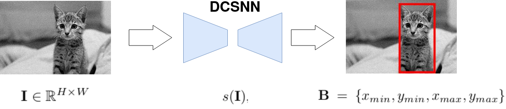
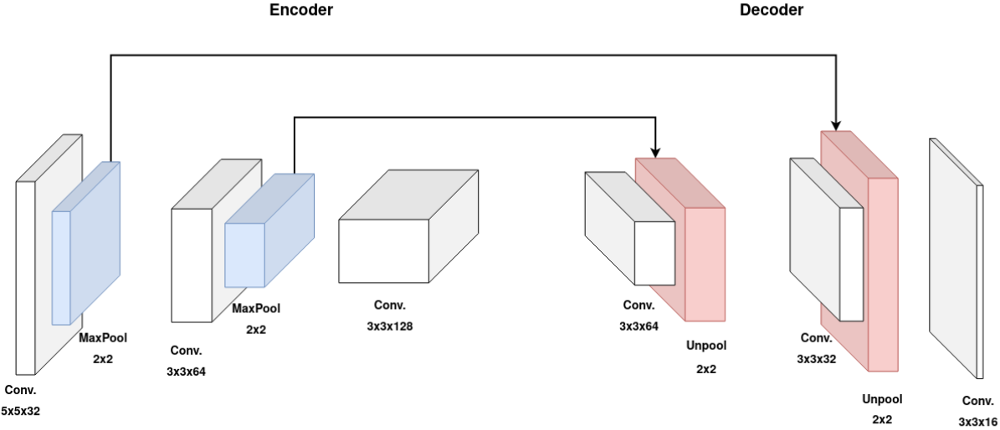
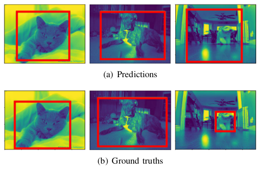

Deep Spiking Convolutional Neural Network for Single Object Localization Based On Deep Continuous Local Learning
Sami BARCHID José MENNESSON Chaabane DJÉRABA
Deep learning
- State-of-the-art in almost all Computer Vision and Machine Learning tasks
- Growing computational, memory and energy costs
Spiking Neural Networks (SNNs)
- Third-generation of AI [Maass1997]
- Spiking neurons : strongly inspired by the neurons of our brain
- Implementable on low-power neuromorphic hardware [Davies2018]
- A potential solution
Challenges
- Spiking neurons are not differentiable [Kaiser2020]
- No backpropagation
- Performance still behind Artificial Neural Networks (ANNs)
Definition
- An SNN consists of spiking neurons that communicate asynchronously through discrete spatio-temporal events called spikes.
- Leaky Integrate and Fire (LIF) neuron model
Objective
Exploit recent works on supervised learning to perform complex tasks
Overview
 Falez et al., "Improving Spiking Neural Networks Trained with Spike Timing Dependent
Plasticity for Image Recognition"
Falez et al., "Improving Spiking Neural Networks Trained with Spike Timing Dependent
Plasticity for Image Recognition"
Architecture
Experimental Proof-of-Concept
Oxford-IIIT-Pet dataset
- $176 \times 240$ dimension
- Training split: 6000 images
- Testing split: 1349 images
Implementation Details
| Implementation | GPU with PyTorch |
|---|---|
| GPU | NVIDIA 2080Ti |
| Batch size | $16$ |
| Optimizer | AdaMax $\beta_1=0$ & $\beta_2=0.95$ |
| Loss | Smooth L1 |
| Learning rate | $10^{-9}$ |
| Data augmentation | Horizontal flipping and random brightness |
Results
$63.2$% mIoU
Future Works
Collaboration
If you want to use DECOLLE for your tasks, tell me !